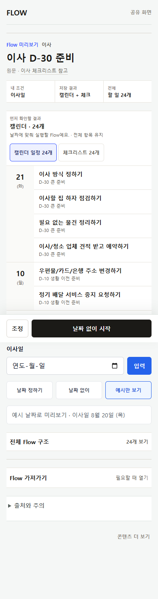
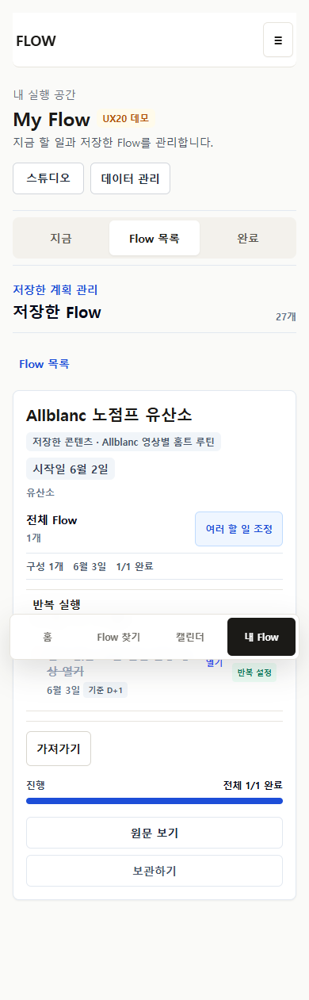
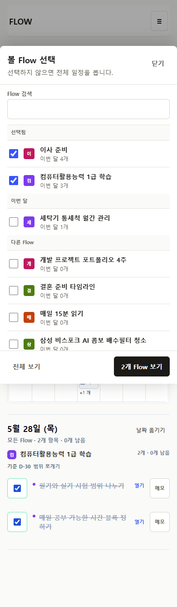
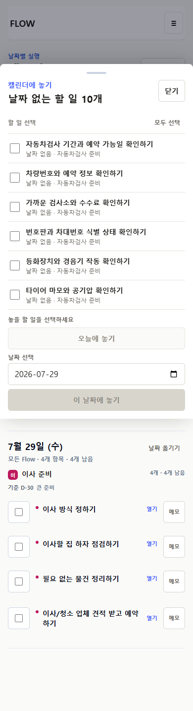
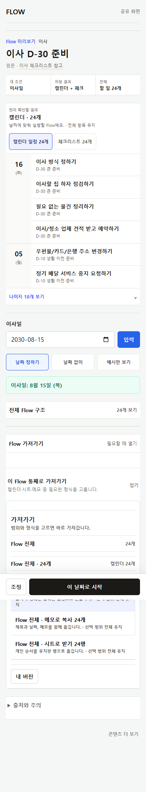
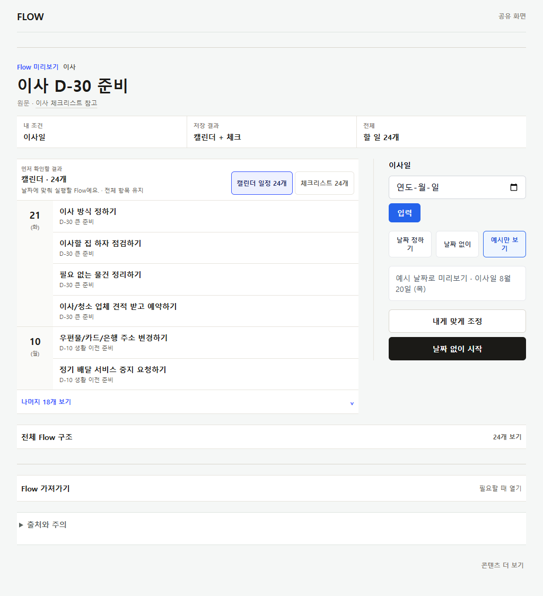
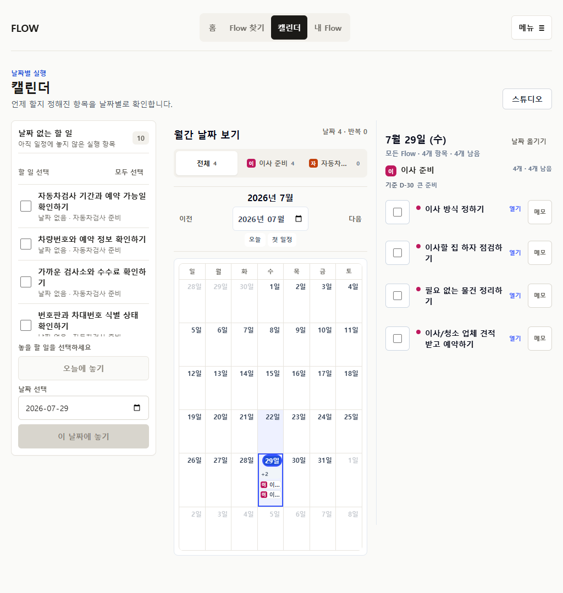
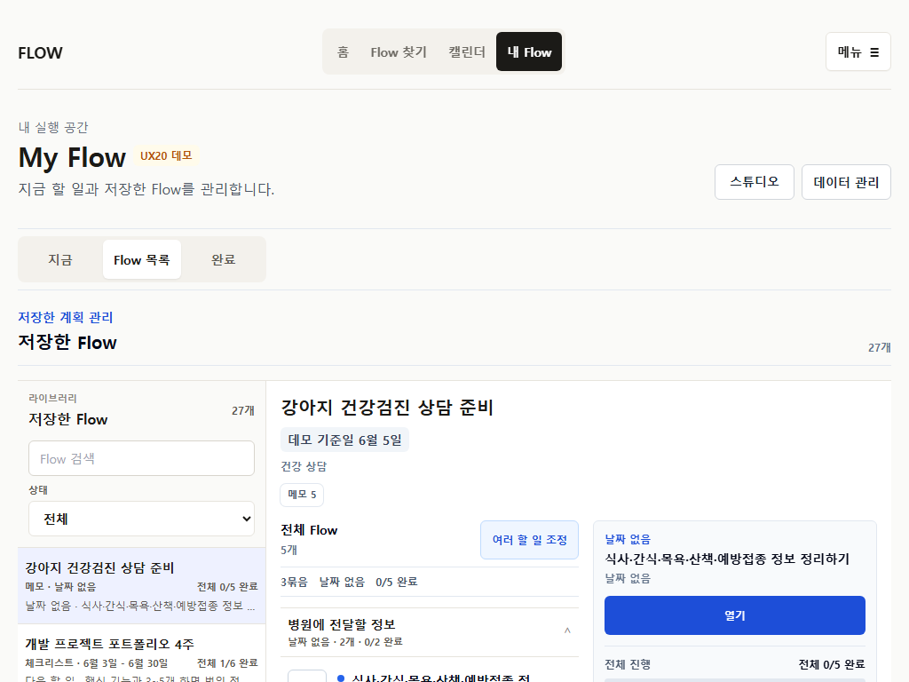

10e6e515 · impl 5304807a · current_source + package/production screenshot 32종 + 홈 SSR 수신 · heuristic · 관찰 사용자 0명
P29는 P28이 미룬 화면 조립을 실제로 다시 했다.
저장 전은 결과가 먼저·목록은 한 번, 저장 후는 분리된 receipt, 루틴은 요약 우선, My Flow는 다음 행동/3-pane, Calendar는 그룹 scope·배치 sheet, export는 범위·개수·손실 우선으로 섰다.
전체 판정은 revise입니다 — 아키텍처·데이터 계약·4탭 IA·public /f는 keep, 남은 것은 밀도·발견성·evidence gap이며 redesign 대상은 없음. P28의 High 4는 source·screenshot로 실제 해소를 확인했습니다. 신규 Findings: Blocking 0 · High 0 · Medium 5 · Low 3. 계약 회귀 0(marker + source 파생 검증). 그러나 자동화·screenshot·heuristic은 사용성 성공이 아니며, 가장 큰 남은 gap은 모바일 날짜 없는 배치 sheet가 production에서 not_seeded라는 점과 관찰 사용자 0명입니다. 앱 코드는 수정하지 않았습니다.
이번 검토의 근거와 한계 (evidence boundary)
이 검토는 실제 사용자 관찰이 아니다(observed users 0명). 근거는 네 층입니다. ① current_source — merge 10e6e515/impl 5304807a의 실제 코드를 직접 읽음: FlowSaveBeforeFrame.tsx, SavedFlowReceiptFrame.tsx, RoutineScheduleSummary.tsx, lib/flow/routine-schedule-presentation.ts, my-flow-workspace-presentation.ts, artifact-recommendation.ts, calendar-flow-scope.ts, calendar-unscheduled-tray.ts, FlowExportPanel.tsx, CalendarFlowScopePicker.tsx, 그리고 tests/e2e/p29-coordinated-surface-reset.spec.ts 전문. ② current_package_screenshot — P29 구현 캡처 23종 + canonical production smoke 캡처 9종을 직접 열어 확인. ③ 제한된 current_production_interaction — canonical production 홈 문서(SSR)를 직접 수신. ④ 그 위의 heuristic_simulation. 결정적 한계: production의 /f/*·/my·/calendar 하위 route는 이 검토 환경에서 직접 fetch가 차단되어(inaccessible) hydration 이후 클릭(저장·완료·reopen·배치·undo)을 수행하지 못했다. 따라서 실행 결과 판정은 not_tested로 분리했고, production 화면 근거는 package가 캡처한 smoke screenshot(current_package_screenshot)에 의존한다. 자동 E2E 292/292·smoke 9/9는 구조·계약 증거이지 사용성 증거가 아니다.
실행 정보 · 전체 verdict
실행 정보
flowme2605.vercel.app · merge 10e6e515current_production_interaction)current_source)current_package_screenshot)inaccessible → 실행 결과 not_tested)전체 판정
revise (keep 아키텍처 · redesign 없음)
확신도 4 / 5 · (관찰 evidence가 없어 5는 아님)
한 문장 근거 · P28이 지목한 위계·중복·밀도 High 4가 source·screenshot에서 실제로 해소됐고 계약 회귀가 없다 → keep. 그러나 잔여 밀도·발견성 Medium 5와 production 미시딩 gap이 남아 무조건 keep은 이르다 → revise. 구조는 건강해 redesign은 불필요하다.
keep — 흔들면 안 되는 것
① buildFlowExperienceProjection stable read model과 primary 1 + secondary ≤2 (artifact-recommendation.ts가 visible=slice(0,3)로 강제) ② source·personal overlay·run·routine series·occurrence·export identity 분리 ③ artifact-first save-before + 분리 receipt frame ④ routine summary-first ⑤ My Flow 3-pane / Calendar 그룹 scope·배치 ⑥ 4탭 IA·public /f·source fidelity. 이 여섯은 P29의 성과이자 회귀 감시 대상이다.
0
Blocking
0
High (P28 4건 해소)
5
Medium (M1–M5)
3
Low (L1–L3)
회귀 0
계약 regression
0
관찰 사용자
Findings — Blocking 0 · High 0 · Medium 5 · Low 3
모든 finding에 route·viewport·재현·기대/실제·사용자 영향·evidenceKind·권장 조치 포함. P29가 P28의 High를 해소했으므로 신규 High는 없다. 남은 것은 밀도·발견성·evidence gap이다. 모든 조치는 composition/파생 계층이며 계약을 바꾸지 않는다.
저장 전 결정 영역이 모바일에서 아직 조밀하다 — anchor 입력 + 날짜 intent 3버튼 + 조정 + primary가 한 화면
route /f/moving-d30-basic · viewport 390 · 재현 save-before 하단 결정 영역에 이사일 [입력] + [날짜 정하기][날짜 없이][예시만 보기] segmented + [조정] + primary [날짜 없이 시작]이 동시에 쌓인다. P29가 목록을 한 번으로 줄인 것과 달리, 결정 표면은 여전히 3구획.
기대 P28 §6 "한 decision surface": 필수 anchor만 inline, 나머지 intent는 조정 안으로. 실제 anchor·intent·조정·primary가 peer로 공존하고, primary 동사가 시작인데 receipt는 저장했어요 — 저장/시작 어휘 혼선이 남음.
영향 · 첫 viewport에서 "무엇을 누르면 무엇이 저장되나" 예측이 약간 흐려짐(P28 H-2의 부분 잔존). evidenceKind current_package_screenshot(save-before-390) + current_source(FlowSaveBeforeFrame artifact-first가 setup+actions를 aside에 함께 렌더; 날짜 intent는 별도 control)
조치 anchor는 결과 생성 필수일 때만 inline, intent segmented는 조정으로, primary 동사를 저장으로 통일. composition만, 계약 무관 → P30-S1

My Flow detail의 secondary 명령이 overflow로 접히지 않고 peer 버튼으로 남음

route /my?demo=ux20&view=flows · viewport 390+1024 · 재현 Flow를 열면 data-p29-marker=P29-MY-FLOW-ACTION-FIRST overview가 다음 행동/상태를 먼저 보여주지만, 그 아래 여러 할 일 조정 · 원문 보기 · 보관하기 · 가져가기가 같은 무게의 버튼으로 나열된다.
기대 P28 H-4 조치: 다음 행동 1 + 나머지는 overflow/tertiary. 실제 next-action 우선순위는 달성했으나 secondary가 overflow로 강등되지 않음. (샘플 flow가 1/1 완료 상태라 in-progress next-action의 시각적 우세는 직접 못 봄 → heuristic_simulation)
영향 · 재방문 시 "지금 뭘 하지"는 개선됐지만 4개 secondary가 스캔 비용을 남김. evidenceKind current_package_screenshot(myflow-detail-390) + current_source
조치 원문/보관을 ⋯ overflow(aria-haspopup)로, 조정·가져가기만 노출 → P30-S2
Calendar scope picker가 그룹은 넣었지만 이번 달 0개 Flow를 접지 않음 — 50+에서 다시 길어짐
route /calendar?demo=ux20 · viewport 390 · 재현 picker가 선택됨 / 이번 달 / 다른 Flow 3그룹으로 정리됐고(P28 M-3 개선) 검색·색점·focus trap을 갖췄다. 단 다른 Flow 그룹이 monthCount===0 Flow를 펼친 채 모두 나열한다(groupedVisibleOptions가 그룹만 나누고 0개를 접지 않음).
기대 P28 M-3 조치 "0개는 접힘 ▸ 전체". 실제 그룹핑까지만 — 27개 fixture에선 무난하나, 50+ 중 다수가 이번 달 0개면 다른 Flow가 다시 긴 목록이 된다.
영향 · scale 상한이 fixture(27)에 머무름. evidenceKind current_source(CalendarFlowScopePicker.groupedVisibleOptions) + current_package_screenshot(cal-scope-picker-390)
조치 다른 Flow를 <details>로 접고 검색어 있을 때만 펼침 · 파생 정렬만 → P30-S3

모바일 날짜 없는 배치 sheet가 production 데모에서 not_seeded — 유일한 신규 상호작용이 라이브 미검증

not_seeded)route /calendar?demo=ux20 (production) · viewport 390 · 재현 production smoke가 undatedSheetState: "not_seeded"로 기록 — canonical 데모에 날짜 없는 fixture가 없어 bottom sheet·batch·undo·focus return이 production에선 실행되지 않는다. 해당 경로는 seeded P29 E2E에서만 통과한다.
기대 P28 M-5의 핵심 신규 UX(배치 sheet)가 실제 환경 근거를 가짐. 실제 source·E2E·seeded screenshot은 견고하나, production 근거와 관찰 근거가 둘 다 없음.
영향 · "날짜 없는 일을 Calendar에서 배치"가 실제 데이터에서 자연스러운지 미확인. evidenceKind current_package_screenshot(production-smoke results) + current_source(E2E seedP29CalendarFlows) + inaccessible(라이브 재현)
조치 날짜 없는 fixture를 가진 demo 파라미터를 production에 추가해 실행 가능한 배치 경로를 노출(코드가 아니라 seed) → P30-S4, 이후 관찰(Q4)
M-5 · MEDIUM
1024 월간 cell 제목 축약의 시각적 구분 충분성 미검증. /calendar 390+1024 grid가 여러 Flow 제목을 컴…·어…로 자른다. source는 full accessible name을 보존하지만(스크린리더 OK), 같은 색·비슷한 축약이 몰릴 때 눈으로 구분되는지는 관찰이 필요. evidenceKind current_package_screenshot(prod-cal-390) + current_source → 색점+개수 우선, 상세는 selected-day agenda(이미 존재)로 유도 · P30-S5 + 관찰 Q5
LOW 3건
L-1 FlowSaveBeforeFrame.tsx에 legacy/hybrid 이중 목록 + 행별 [수정] 조립이 그대로 남아 route composition prop으로만 artifact-first 전환. README도 legacy frame 제거·AppClient 크기를 잔여 위험으로 명시. 사용자 화면 결함은 아니나 회귀·유지보수 표면 · current_source → P30-S6(비UI)
L-2 save-before primary 동사 시작 vs receipt 저장했어요 어휘 불일치(M-1과 연동). 저장이 실제 동작임은 receipt·E2E로 확인되나 표기 통일 여지 · current_package_screenshot+current_source
L-3 routine 요약이 값 미설정 시 시간 없음 · 종료일 없음을 출력(routine-schedule-presentation.ts). 문법상 맞지만 사용자가 종료일 없음을 오류가 아닌 유효 상태로 읽는지는 관찰 대상 · current_source → 관찰 Q3
지정 5여정 재현 판정
각 cell은 clear / friction / not_tested / inaccessible / n/a. 시각·위계로 읽히는 단계는 source+screenshot로 판정하고, hydration 클릭이 필요한 실행 결과는 정직하게 not_tested(환경상 inaccessible)로 표기한다. blocked 0 — 기능이 막힌 여정은 없다.
| 여정 (route) | 결과 확인 | 조정 | 저장·receipt | 실행·완료/reopen | Calendar·배치 | export | 전체 |
| 1 이사 /f/moving-d30-basic | clear | friction M-1 | clear | not_tested | clear | clear | clear· |
| 2 운동 루틴 /f/curated-allblanc… | clear | clear | not_tested | not_tested | clear | n/a | clear· |
| 3 많은 My Flow /my?demo=ux20 | clear | friction M-2 | n/a | not_tested | n/a | clear | friction |
| 4 많은 Calendar /calendar?demo=ux20 | clear | clear | n/a | not_tested | friction M-4·M-5 | n/a | friction |
| 5 결과·export /f/moving + /my | clear | clear | clear | n/a | n/a | clear/일부 not_tested | clear· |
읽는 법 · clear=위계가 행동을 명확히 안내(source+screenshot 확인) · friction=기능은 있으나 밀도/발견성이 방해 · not_tested=hydration 클릭 필요, 환경상 미수행 · n/a=해당 여정에 없는 단계. 실행 결과(저장 성공·완료·reopen·라이브 배치/undo·클립보드 복사)는 자동 E2E 292/292가 seeded로 통과했으나, 이 검토가 직접 수행하지는 못했다 — 그래서 not_tested다. §5·§8이 이 gap을 이월한다.
P29에서 실제로 개선된 점 (source·screenshot 확인)
P28 검토의 High 4 + Medium 다수가 구조적으로 해소됐음을 코드와 화면에서 직접 확인했다. 각 항목은 marker·source·screenshot로 교차 검증.
① 저장 전 목록이 하나로 (P28 H-1 해소)
artifact-first 분기는 결과 preview(primary-result)를 앞세우고 전체 outline을 <details> 전체 Flow 구조 · N개 보기 단일 disclosure로 둔다. P28의 "이중 목록"이 사라짐. 행별 [수정]은 artifact-first에서 렌더되지 않음(saveBeforeRowEditControlCountBeforeAdjust==0). current_source(FlowSaveBeforeFrame) + current_package_screenshot
② 저장 후 분리된 receipt (신규 frame)
SavedFlowReceiptFrame이 별도 section으로 전환: 저장 전 hero·anchor 입력·저장 CTA가 사라지고(E2E hero.toHaveCount(0)) 저장 완료 eyebrow + N개 저장했어요 + 지표 dl + primary 1개 내 Flow에서 시작 + tertiary 캘린더에서 보기. current_source + current_package_screenshot(receipt-390)
③ 루틴 summary-first (P28 H-3 해소)
RoutineScheduleSummary가 월·수·금 · 07:30 · 45분 · 8회 한 줄 + 다음 3 occurrence chip을 먼저 보이고 6개 입력은 반복 설정 바꾸기 disclosure 뒤. 요약은 SavedFlowRoutineDefinition에서 파생(routine-schedule-presentation.ts), 계약 불변. current_source + current_package_screenshot(routine-summary-390)
④ My Flow 다음 행동·compact·3-pane (P28 H-4 해소)
모바일 library는 8개 compact row·행당 open 명령 1개·높이 ≤72px, detail은 P29-MY-FLOW-ACTION-FIRST overview 우선, wide는 rail 280 / canvas / inspector 320(E2E가 px까지 assert). next-action은 selectMyFlowNextActionRow로 파생. current_source + current_package_screenshot(myflow-library/workspace)
⑤ Calendar 그룹 scope + 배치 sheet (P28 M-3·M-5 해소)
scope는 >5에서 picker로 전환, 선택됨/이번 달/다른 Flow 그룹 + 검색 + focus trap/return + body scroll lock. 모바일 배치는 focus 복귀 bottom sheet, wide는 280/_/320 3-pane. batch preview atomic·undo 존재. current_source(CalendarFlowScopePicker/UnscheduledTray) + current_package_screenshot
⑥ Export 범위·개수·손실 우선 (P28 M-4 해소)
preflight가 범위 segmented → 개수 요약 → 날짜 있음/없음/제외 → 추천(primary 1+secondary ≤2, 이유·손실 라벨). action 라벨에 scope 포함(Flow 전체 · 캘린더 일정 24개). receipt가 data-export-output-count로 예측=실제 개수 parity(E2E assert)와 flowTitle · 출처 identity 유지. current_source(artifact-recommendation/FlowExportPanel/Receipt) + current_package_screenshot(export-preflight-390)



아직 설명·밀도·발견성으로 남은 점
밀도 (density)
M-1 save-before 결정 영역(anchor+intent+조정+시작)이 모바일 한 화면에 공존. M-2 My Flow detail의 4개 secondary가 overflow 없이 peer. → 두 곳 모두 "primary 1 + 나머지 접기"를 결정 표면까지 확장해야 P28의 목표에 완전히 닿는다.
발견성 (discoverability)
M-3 scope picker 0개 그룹 미접힘 → 50+ 확장성 상한. M-5 월간 cell 축약이 시각적으로 구분되는지 미검증(접근명은 보존). → 둘 다 대량 상황의 발견성 문제이며, 27-Flow/12-Flow fixture로는 드러나지 않는다.
설명 (explanation)
P29는 대체로 설명문을 늘리지 않고 위계로 해결했다(좋음). 남은 것은 L-2 시작/저장 동사 혼선, L-3 종료일 없음의 의미 — 이는 설명 추가가 아니라 label/동사 통일과 관찰로 닫아야 한다.
evidence gap (가장 큼)
M-4 production 날짜 없는 배치 sheet not_seeded — 신규 UX가 라이브 미검증. 그리고 모든 실행 결과(완료·reopen·저장·복사·undo)가 이 검토에서 not_tested, observed users 0. 자동화·screenshot은 이 gap을 메우지 못한다.
중요한 균형 · 남은 항목은 어느 것도 긴 설명으로 위계를 덮는 유형이 아니다. P29는 그 함정을 피했다. 잔여는 (a) 결정·명령 밀도의 마지막 정리, (b) 대량 상황 발견성, (c) 아직 seed·관찰되지 않은 경로다. 따라서 P30은 새 기능이 아니라 evidence gap 닫기여야 한다(§8).
source / personal / run / occurrence / export 계약 회귀 여부
판정: 회귀 발견 0. 검증 방법 — ① marker-reconciliation.json(regressionCount:0 · schemaMigrationCount:0 · sourceMutationCount:0) ② source에서 P29 신규 표현 계층이 모두 기존 projection/plan을 파생·소비만 함을 직접 확인. 단, 아래 not_tested 경로는 자동 E2E로만 green이며 이 검토가 직접 실행하지 못했다.
| 계약 | P29 판정 | 이 검토의 직접 근거 |
| source immutable / published | 유지 | sourceMutationCount:0 · 표현 계층이 read-only projection 소비 · current_source |
| personal overlay 분리 | 유지 | receipt/adjust가 overlay 필드만 수정, source 미변경 · current_source |
| execution run 분리 | 유지 (실행 결과 not_tested) | 완료/reopen은 E2E green · 라이브 미수행 · current_source+inaccessible |
| series ↔ occurrence 분리 | 유지 | seriesMutatedByOccurrenceCompletion:false · summary는 정의 파생 · current_source |
| export identity·scope·count | 유지·강화 | receipt output-count==predicted parity, flowTitle·출처 유지 · current_source+E2E |
| 4탭 IA · public /f shell | 유지 | 홈 SSR·smoke가 canonical 4탭 확인, 5번째 탭 승격 없음 · current_production_interaction+current_package_screenshot |
주의 · primary 1 + secondary ≤2는 artifact-recommendation.ts의 visible = orderedShapes.slice(0,3)·secondary = slice(1)로 코드에서 강제되어 회귀 위험이 낮다. 반면 run/occurrence 실행 결과는 seeded 자동화로만 green이므로, 관찰 전 이 검토는 유지(단, 실행 결과 not_tested)로 표기한다.
390 / 1024 / 1440 visual hierarchy · 접근성 판정
390 (mobile)
판정 clear· DOM 순서 header→result→disclosure→adjust→save→nav, overflow 0, 44px 타깃, main이 tabs보다 앞(E2E). 잔여 save-before 결정 밀도(M-1), cell 축약(M-5).
1024 (tablet)
판정 clear save-before 좌=결과/우=결정(y정렬), My Flow rail 280/inspector 320, Calendar 3-pane 또는 2-pane(>500,320). role 분리가 화면에서 확인됨.
1440 (desktop)
판정 clear 1024 구조가 넓은 canvas로 확장(빈 캔버스 늘어짐 없음). receipt·workspace가 폭을 채움. overflow 0.
접근성 (a11y)
구조 green·관찰 대기 E2E가 4route×3viewport에서 unnamed 0·fixed overlap 0·console/page error 0, picker/sheet focus trap+return, disclosure aria-expanded, receipt aria-live 확인. 단 이는 self-harness heuristic — cell 축약의 시각적 대비는 관찰 필요(M-5).



P30 — evidence-gap 백로그 (새 기능 아님)
P30은 새 기능 목록이 아니다. P29에서 남은 evidence gap만 다룬다. 아래를 (A) 구현 가능한 slice와 (B) 실제 사용자 관찰 질문으로 분리한다. A는 관찰 전에 닫아야 관찰 세션이 이미 아는 결함 재발견에 소모되지 않는다.
(A) 구현 가능한 slice — composition/seed only, 계약 불변
P30-S4 · production 날짜 없는 fixture seed (최우선 · M-4)
목적 배치 sheet를 라이브에서 실행 가능하게. 범위 demo 파라미터에 undated fixture 추가(코드 아님, seed). 선행 없음. acceptance production smoke가 undatedSheetState를 seeded로 기록, sheet/undo/focus return 라이브 캡처. dependency → Q4.
P30-S1 · save-before 결정 표면 축약 (M-1·L-2)
목적 anchor만 inline·intent는 조정으로·동사 저장 통일. 범위 FlowSaveBeforeFrame aside 재배치. 비범위 projection/저장 계약. acceptance saveDecisionSurfaceCount==1 · saveVerbDistinct==1. dependency 없음.
P30-S2 · My Flow detail secondary overflow (M-2)
목적 원문/보관을 ⋯ overflow로, 다음 행동+조정만 노출. 범위 detail 명령 계층. acceptance myFlowDetailPeerCommandCount<=2. dependency 없음. 주의 in-progress flow로 acceptance 캡처(완료 flow 아님).
P30-S3 · scope picker 0개 그룹 접기 (M-3)
목적 다른 Flow를 <details>로, 검색 시만 펼침. 범위 CalendarFlowScopePicker 렌더. acceptance 50-Flow fixture에서 초기 노출 그룹 ≤2. dependency 50+ fixture(테스트용).
P30-S5 · 월간 cell 색점+개수 우선 (M-5)
목적 축약 대신 색점·개수, 상세는 selected-day agenda로. 범위 grid cell 표기(접근명 유지). acceptance cell 내 truncated 텍스트 의존 0, agenda가 full title. dependency 없음.
P30-S6 · legacy save-before 조립 제거 (L-1 · 비UI)
목적 production 근거 확보 후 FlowSaveBeforeFrame의 legacy/hybrid 분기 제거로 회귀 표면 축소. 범위 dead path 정리 + AppClient 추가 분리. acceptance 시각 diff 0·계약 marker green. dependency S1 이후 + production smoke green(ROADMAP 규칙 8).
(B) 실제 사용자 관찰로만 닫히는 질문 → §9
위 A slice는 관찰 이전에 닫는다. A로 닫을 수 없는 것(이해·신뢰·자연스러움)은 §9 관찰 질문으로 이월하며, A와 B를 섞지 않는다. dependency 순서: S4(seed) → S1·S2·S3·S5(병렬) → 관찰 Q1–Q7 → S6(정리).
실제 사용자에게만 확인할 질문 · 최종 요약
관찰로만 닫히는 질문 (자동화 불가)
Q1 첫 viewport에서 실제 결과 → 조정 → 저장 순서가 설명 없이 읽히는가? Q2 저장 전 화면과 완료 receipt를 명확히 다른 상태로 인지하는가? Q3 루틴 요약(종료일 없음 포함)만으로 종료 조건을 오해 없이 이해하는가? Q4 날짜 없는 일을 Calendar에서 배치하는 것이 자연스러운가(S4 seed 후)? Q5 1024 cell 축약이 여러 Flow를 시각적으로 구분해 주는가? Q6 같은 Flow가 public·receipt·My Flow·Calendar·export에서 같은 객체로 느껴지는가? Q7 20+ My Flow에서 검색 전에 어떤 정보로 원하는 Flow를 찾는가? — 모두 observed_user로만 판정 가능.
관찰 전에 코드로 닫을 것 (A slice)
S4 production undated seed · S1 저장 결정 표면·동사 · S2 detail overflow · S3 0개 그룹 접기 · S5 cell 색점. 이걸 열어두면 관찰 세션이 M-1·M-2·M-3·M-5 재발견에 소모된다. 순서 S4 먼저(Q4의 전제), 나머지 병렬.
최종 요약
keep
artifact-first save-before, 분리 receipt, routine summary-first, My Flow 다음행동·3-pane, Calendar 그룹 scope·배치, export scope·count·loss·identity, primary1+secondary≤2, 계약·4탭·public /f.
revise
save-before 결정 밀도·동사(M-1·L-2), My Flow secondary overflow(M-2), scope 0개 접기(M-3), cell 색점(M-5).
redesign
없음. 구조가 건강해 재설계 불필요. (단 L-1 legacy 조립은 근거 확보 후 제거 정리.)
defer
계정/DB/sync, 실제 AI/crawler, OAuth, Studio 5탭, planner 확장, marketplace. P29 범위 아님.
P30 첫 목표 · P30-S4 production 날짜 없는 fixture seed로 배치 sheet를 라이브 검증 가능하게 만든 뒤, S1·S2·S3·S5 밀도/발견성 정리를 병렬로 닫고 → 관찰(Q1–Q7)을 연다. 전체 판정 = revise · 확신도 4/5.
앱 코드 수정: false · observed-user: 0 · evidence: current_source(11 files + P29 E2E) + current_package_screenshot(23 impl + 9 production smoke) + 제한적 current_production_interaction(홈 SSR) + heuristic_simulation · production 하위 route 직접 조작 inaccessible → 실행 결과 not_tested · 자동 E2E 292/292·smoke 9/9는 구조·계약 증거이며 사용성 증거가 아니다.